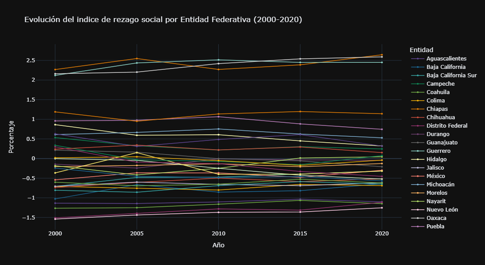
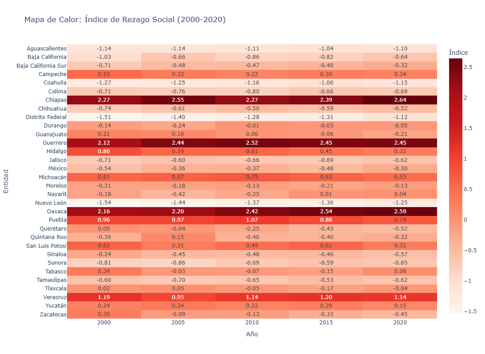

import pandas as pd
import plotly.express as pxindiceDeRezagoSocial2000 = pd.read_excel(
'../data/IndiceDeRezagoSocial/IRS_entidades_mpios_2000.xlsx',
usecols=['Entidad federativa','Índice de rezago social'],
skiprows=4,
header=0
)
indiceDeRezagoSocial2005 = pd.read_excel(
'../data/IndiceDeRezagoSocial/IRS_entidades_mpios_2005.xlsx',
usecols=['Índice de rezago social'],
skiprows=4,
header=0
)
indiceDeRezagoSocial2010 = pd.read_excel(
'../data/IndiceDeRezagoSocial/IRS_entidades_mpios_2010.xlsx',
usecols=['Índice de rezago social'],
skiprows=4,
header=0
)
indiceDeRezagoSocial2015 = pd.read_excel(
'../data/IndiceDeRezagoSocial/IRS_entidades_mpios_2015.xlsx',
usecols=['Índice de rezago social'],
skiprows=4,
header=0
)
indiceDeRezagoSocial2020 = pd.read_excel(
'../data/IndiceDeRezagoSocial/IRS_entidades_mpios_2020.xlsx',
usecols=['Índice de rezago social'],
skiprows=4,
header=0
)
indiceDeRezagoSocial2000_2020=pd.concat([
indiceDeRezagoSocial2000.reset_index(drop=True),
indiceDeRezagoSocial2005.reset_index(drop=True),
indiceDeRezagoSocial2010.reset_index(drop=True),
indiceDeRezagoSocial2015.reset_index(drop=True),
indiceDeRezagoSocial2020.reset_index(drop=True)
], axis=1)
indiceDeRezagoSocial2000_2020=indiceDeRezagoSocial2000_2020.drop([0,1,34,35,36,37,38])
indiceDeRezagoSocial2000_2020.columns = ['Entidad', '2000', '2005', '2010', '2015', '2020']
indiceDeRezagoSocial2000_2020| Entidad | 2000 | 2005 | 2010 | 2015 | 2020 | |
|---|---|---|---|---|---|---|
| 2 | Aguascalientes | -1.135999 | -1.144505 | -1.106007 | -1.036695 | -1.101561 |
| 3 | Baja California | -1.028277 | -0.663637 | -0.855111 | -0.818078 | -0.642387 |
| 4 | Baja California Sur | -0.710752 | -0.481994 | -0.473796 | -0.395355 | -0.317027 |
| 5 | Campeche | 0.534566 | 0.324935 | 0.216209 | 0.304117 | 0.244535 |
| 6 | Coahuila | -1.266207 | -1.250579 | -1.160584 | -1.064973 | -1.147587 |
| 7 | Colima | -0.708163 | -0.756951 | -0.803184 | -0.657650 | -0.690655 |
| 8 | Chiapas | 2.267370 | 2.548142 | 2.271180 | 2.387669 | 2.644224 |
| 9 | Chihuahua | -0.738870 | -0.606449 | -0.499152 | -0.587185 | -0.518357 |
| 10 | Distrito Federal | -1.509716 | -1.396498 | -1.283248 | -1.313332 | -1.115345 |
| 11 | Durango | -0.142996 | -0.241208 | -0.008311 | -0.032549 | -0.045956 |
| 12 | Guanajuato | 0.213335 | 0.162208 | -0.002638 | -0.058403 | -0.209212 |
| 13 | Guerrero | 2.117126 | 2.436138 | 2.515737 | 2.451450 | 2.450336 |
| 14 | Hidalgo | 0.864043 | 0.592812 | 0.607696 | 0.449552 | 0.320126 |
| 15 | Jalisco | -0.705830 | -0.598414 | -0.657302 | -0.691705 | -0.616826 |
| 16 | México | -0.543459 | -0.362957 | -0.365129 | -0.479527 | -0.298102 |
| 17 | Michoacán | 0.610804 | 0.667591 | 0.754738 | 0.625247 | 0.529919 |
| 18 | Morelos | -0.206200 | -0.175485 | -0.133636 | -0.208835 | -0.126541 |
| 19 | Nayarit | -0.183518 | -0.415812 | -0.246732 | 0.012639 | 0.044037 |
| 20 | Nuevo León | -1.541669 | -1.438426 | -1.369960 | -1.360326 | -1.254735 |
| 21 | Oaxaca | 2.160897 | 2.203928 | 2.417787 | 2.539013 | 2.590888 |
| 22 | Puebla | 0.960073 | 0.974927 | 1.067469 | 0.883423 | 0.744487 |
| 23 | Querétaro | -0.002922 | -0.044294 | -0.247308 | -0.425912 | -0.524491 |
| 24 | Quintana Roo | -0.364652 | 0.150361 | -0.398767 | -0.396130 | -0.317166 |
| 25 | San Luis Potosí | 0.630159 | 0.308704 | 0.485238 | 0.611014 | 0.319126 |
| 26 | Sinaloa | -0.243174 | -0.453588 | -0.484160 | -0.457801 | -0.567552 |
| 27 | Sonora | -0.808031 | -0.856683 | -0.690455 | -0.588205 | -0.650546 |
| 28 | Tabasco | 0.337082 | -0.032075 | -0.073511 | -0.154476 | 0.076399 |
| 29 | Tamaulipas | -0.602925 | -0.695808 | -0.652180 | -0.526805 | -0.622628 |
| 30 | Tlaxcala | 0.019160 | 0.045230 | -0.051343 | -0.173664 | -0.040526 |
| 31 | Veracruz | 1.191100 | 0.950391 | 1.135490 | 1.199394 | 1.143246 |
| 32 | Yucatán | 0.238148 | 0.343950 | 0.219375 | 0.294461 | 0.152467 |
| 33 | Zacatecas | 0.299498 | -0.093952 | -0.128406 | -0.330374 | -0.452588 |
columna_entidad = indiceDeRezagoSocial2000_2020.columns[0]
colores = px.colors.qualitative.Prism + px.colors.qualitative.Set3
df_tidy = pd.melt(
indiceDeRezagoSocial2000_2020,
id_vars=[columna_entidad],
var_name='Año',
value_name='Porcentaje'
)
df_tidy['Año'] = df_tidy['Año'].astype(int)
# Verificar que funcionó
print("Datos transformados:")
print(df_tidy.head())
print(f"\nAños disponibles: {sorted(df_tidy['Año'].unique())}")
print(f"Entidades: {df_tidy['Entidad'].nunique()}")
# Crear gráfico de líneas
fig = px.line(
df_tidy,
x='Año',
y='Porcentaje',
color='Entidad',
color_discrete_sequence=colores,
title='Evolución del indice de rezago social por Entidad Federativa (2000-2020)',
labels={'Indice': 'Indice de rezago social', 'Año': 'Año'},
template='plotly_dark'
)
# Mejorar visualización
fig.update_traces(mode='lines+markers', marker=dict(size=4), line=dict(width=1.5))
fig.update_layout(
height=600,
hovermode='x unified',
legend=dict(
title='Entidad',
orientation='v',
yanchor='top',
y=1,
xanchor='left',
x=1.02
)
)
# Mostrar gráfica
fig.show()
# Guardar como HTML interactivo
fig.write_html('indice_de_rezago_social.html')Datos transformados:
Entidad Año Porcentaje
0 Aguascalientes 2000 -1.135999
1 Baja California 2000 -1.028277
2 Baja California Sur 2000 -0.710752
3 Campeche 2000 0.534566
4 Coahuila 2000 -1.266207
Años disponibles: [np.int64(2000), np.int64(2005), np.int64(2010), np.int64(2015), np.int64(2020)]
Entidades: 32
matriz = indiceDeRezagoSocial2000_2020.set_index('Entidad')
fig = px.imshow(
matriz,
text_auto='.2f',
aspect='auto',
title='Mapa de Calor: Índice de Rezago Social (2000-2020)',
labels=dict(x='Año', y='Entidad', color='Índice'),
color_continuous_scale='Reds',
template='plotly_white'
)
fig.update_layout(height=800)
fig.write_html('mapa_calor_rezago_social.html')
fig.show()